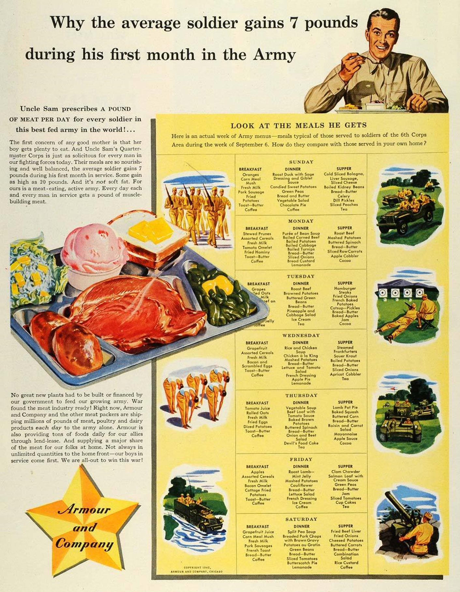
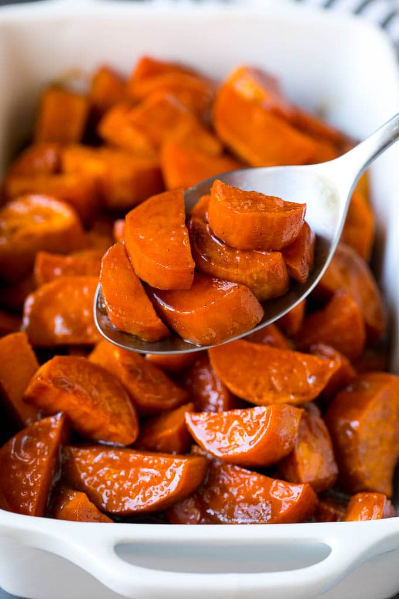
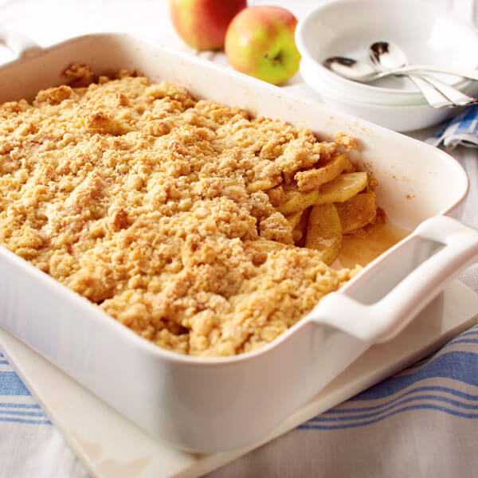
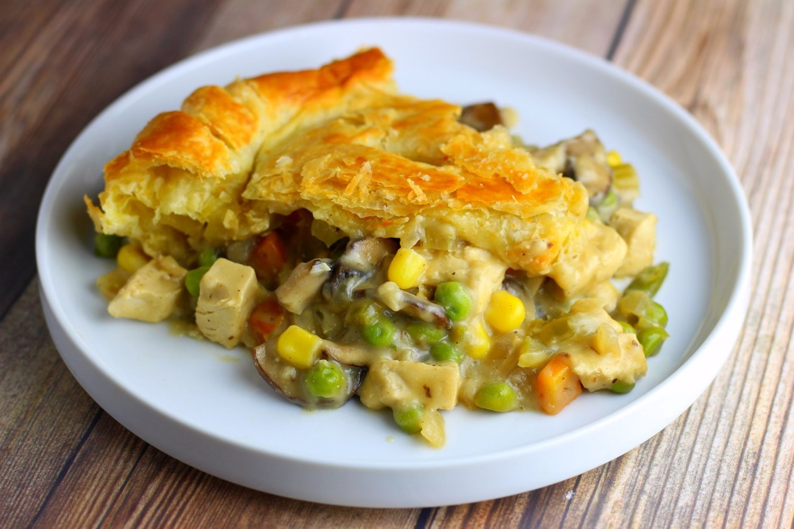
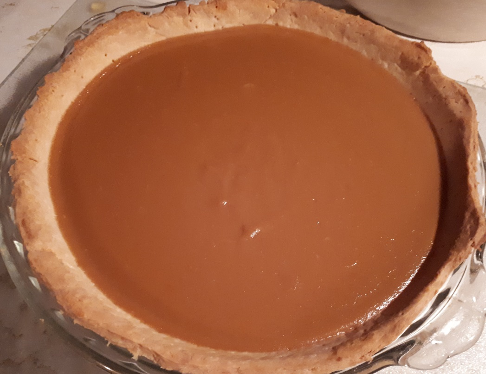

제2차 세계대전 중 미육군 1주일치 식단
게시: 2020-08-27T06:30:42+09:00
인터넷질 하다가 구글에서 찾은 제2차 세계대전 중 미육군 배식에 대한 포스터를 찾았습니다. 그거 번역했어요. 물론 종이 위에 인쇄된 것과 실제 병사들 식탁에 올랐던 것 사이에는 간격이 크겠지만... 저희 집보다 잘 먹네요.
---------------------------
"왜 병사들이 육군 입대 이후 첫달 동안 평균 7파운드씩 체중이 늘었을까?" 엉클 샘(미 정부를 의인화한 것)은 세계에서 가장 잘 먹는 군대의 모든 병사들에게 하루에 고기 1파운드를 처방합니다. 모든 좋은 엄마의 첫번째 관심은 아들이 충분히 먹도록 하는 것입니다. 엉클 샘의 보급부대는 오늘날 우리 군대의 모든 병사들에게 엄마처럼 세심히 배려합니다. 병사들의 식사는 영양이 풍부하고 균형이 잘 잡혀 있으며, 병사들은 입대한 첫달 동안 체중이 평균 7파운드 늘어납니다. 어떤 병사들은 20파운드 늘기도 합니다. 그리고 그건 물렁살(soft fat)이 찌는 것이 아닙니다. 우리 육군은 고기를 먹는 활동적인 군대입니다. 군장병들은 근육을 키워주는 고기를 매일 1파운드씩 먹습니다. 나날이 증강되는 우리 육군을 먹이기 위해 정부가 새로 공장을 짓거나 재정 부담을 할 필요도 없습니다. 전쟁이 시작될 때 이미 우리나라의 육가공 산업은 준비가 되어 있었습니다 ! 지금 이 순간, Armour & Company (아머 앤 컴퍼니, 회사 이름) 및 기타 육가공 업체들은 육류와 닭고기, 유제품을 육군에게만 해도 매일 수백만 파운드씩 공급하고 잇습니다. 아머 사는 렌드-리스(lend-lease, 제2차 세계대전 당시 미국의 연합군 군수지원 정책) 프로그램에 따라 우리 연합국에게도 매일 수톤씩의 식품을 공급하고 있습니다. 또한 고향에 있는 우리 가족들을 위해서도 많은 양을 공급하고 있습니다. 민간 가정을 위해서는 언제나 무한정으로 공급되는 것은 아닙니다. 군 장병들이 먼저니까요. 우리는 이 전쟁에서의 승리를 위해 전력을 다하고 있습니다.

"병사 개개인이 받는 배식량을 보십시요" 여기 실제 육군 병사를 위한 주간 메뉴가 있습니다. 제6 군단 병사들이 9월 6일 주간에 실제로 받은 식단입니다. 여러분의 가정에서 먹는 것과 비교할 때 어떤가요 ?
일요일 아침 : 오렌지, 옥수수 가루 죽(corn meal mush), 우유, 돼지고기 소시지, 감자튀김, 토스트와 버터, 커피 점심 : 세이지 허브로 구운 오리고기, 드레싱과 지블릿 소스(giblet sauce, 닭이나 오리 내장으로 만든 육즙 소스), 고구마 맛탕(candied sweet potatoes, 진짜 고구마 맛탕인듯?), 완두콩, 빵과 버터, 채소 샐러드, 초컬릿 파이, 커피 저녁 : 볼로냐 소시지, 간 소시지(liver sausage), 치즈, 삶은 강낭콩, 빵과 버터, 셀러리, 딜 피클, 복숭아, 홍차

(서양 고구마 맛탕 candied sweet potatoes)
월요일 아침 : 조리한 말린 자두, 여러 종류의 시리얼, 우유, 토마토 오믈렛, 튀긴 옥수수죽, 토스트-버터, 커피 점심 : 콩 수프, 삶은 콘 비프, 삶은 감자-양배추-당근-무, 빵과 버터, 양파, 커스터드 빵 푸딩(bread custard), 레모네이드 저녁 : 로스트 비프, 으깬 삶은 감자, 시금치, 빵과 버터, 날 당근, 애플 코블러(apple cobbler, 사과와 설탕과 귀리로 만든 디저트), 코코아

(애플 코블러, 굳이 번역하면 귀리-설탕-사과 범벅 ?)
화요일 아침 : 포도, 압착 귀리, 우유, (가려서 안 보임), 잼, 커피 점심 : 로스트 비프, 해시 브라운, 줄기콩 버터 볶음, 빵과 버터, 파인애플-양배추 샐러드, 아이스크림, 홍차 저녁 : 햄버거 스테이크, 양파튀김, 프렌치 구운 감자, 케첩-피클, 빵과 버터, 구운 사과, 잼, 커피 수요일 아침 : 자몽, 여러 종류의 시리얼, 우유, 베이컨과 스크램블드 에그, 토스트와 버터, 커피 점심 : 쌀을 넣은 치킨 수프, 치킨 아 라 킹(chicken a la king, 크림 소스를 넣은 닭 스튜), 으깬 삶은 감자, 빵과 버터, 양상추와 토마토 샐러드, 프렌치 드레싱, 애플 파이, 레모네이드 저녁 : 삶은 프랑크 소시지, 사우어크라우트, 삶은 감자, 빵과 버터, 양파, 살구 코블러(apricot cobbler), 홍차 목요일 아침 : 토마토 주스, 압착 귀리, 우유, 달걀 프라이, 감자 깍뚝썰기, 토스트-버터, 커피 점심 : 채소 수프, 토마토 소스를 얹은 비프 로프, 구운 감자, 시금치, 빵과 버터, 양파-사탕무 샐러드, 초컬릿 케이크(Devil's Food cake), 홍차 저녁 : 양고기 팟 파이(lamb pot pie, 크림 소스 스튜 위에 파이 껍질 얹은 요리), 구운 호박, 옥수수 버터구이, 빵과 버터, 건포도-당근 샐러드, 마요네즈, 사과 소스, 코코아

(이건 Lamb pot pie가 아니라 chicken pot pie 입니다. 제가 카투사로 복무할 때도 주식으로 자주 나오는 음식이었는데, 먹을 만 합니다. 냉동 식품으로도 많이 나오고요.)
금요일 아침 : 사과, 여러 종류의 시리얼, 우유, 베이컨 오믈렛, 얇게 썰어 튀긴 감자(cottage fried potatoes), 토스트-버터, 커피 점심 : 박하 젤리를 얹은 양고기 구이, 으깬 삶은 감자, 콜리플라워, 빵과 버터, 양상추 샐러드, 프렌치 드레싱, 아이스크림, 커피 저녁 : 조개 크림 수프(clam chowder), 크림 소스를 얹은 연어 구이, 완두콩, 빵과 버터, 잼, 토마토, 컵케이크, 홍차 토요일 아침 : 자몽 주스, 옥수수 가루 죽, 우유, 돼지고기 소시지, 프렌치 토스트, 빵과 버터, 커피 점심 : 완두콩 수프(split pea soup), 고기국물을 얹은 빵가루 입힌 포크찹(breaded pork chops), 감자 그라탕, 줄기콩, 빵과 버터, 토마토, 버터스캇치 파이(butterscotch pie, 버터와 설탕으로 만든 소를 넣은 파이), 레모네이드 저녁 : 소 간 튀김, 양파 튀김, 치즈 얹어 구운 감자, 버터로 볶은 당근, 빵과 버터, 컴비네이션 샐러드, 쌀 커스터드 푸딩, 커피

(요즘도 수퍼에서 '버터스캇치 캔디'라는 것을 파는지 모르겠는데, 아마 그 맛이 나는 파이 아닐까 합니다.)